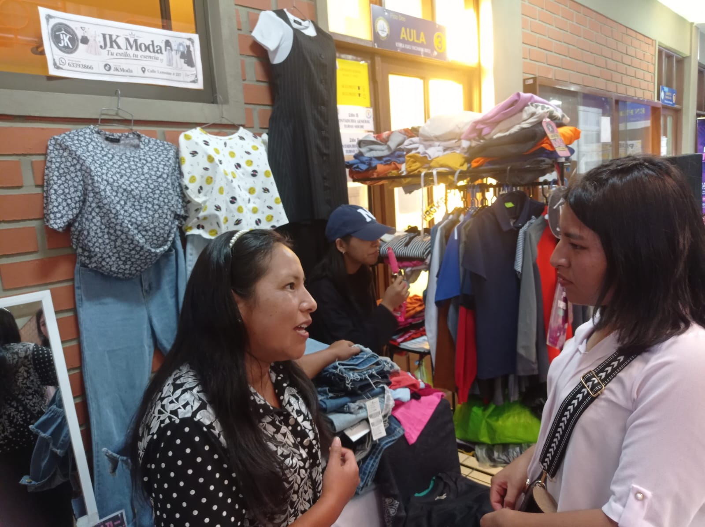
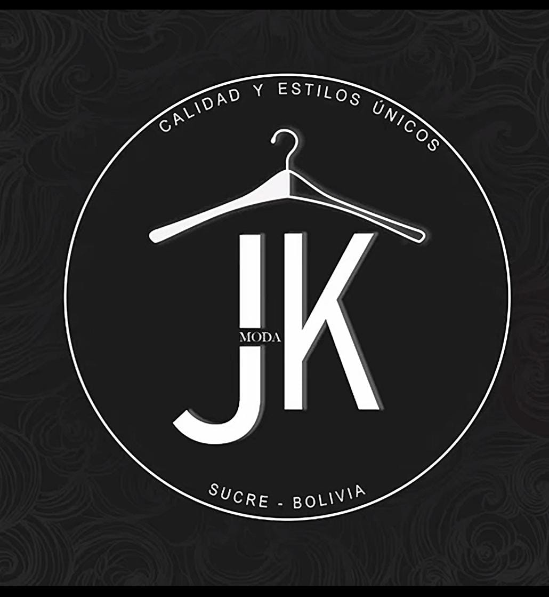

Al principio tuvo miedo y solo pidió medio fardo con sus ahorros. Lo vendió todo en una semana por Facebook y WhatsApp. Le gustó porque podía trabajar desde su casa y cuidar a sus hijos. Así se animó a pedir fardos completos y ahora ya tiene su paginita donde vende ropa coreana para jóvenes y señoras. Todo empezó chiquito y fue creciendo por constancia. Lo que empezó como un gusto personal, poco a poco se convirtió en su emprendimiento de venta de ropa coreana. Ahora vende por redes y le va bien porque lo hace con gusto.
Usó Android en su celular para vender por WhatsApp, Facebook y TikTok, y una laptop con Windows 10 para llevar sus cuentas en Excel y hacer sus publicaciones con Canva.